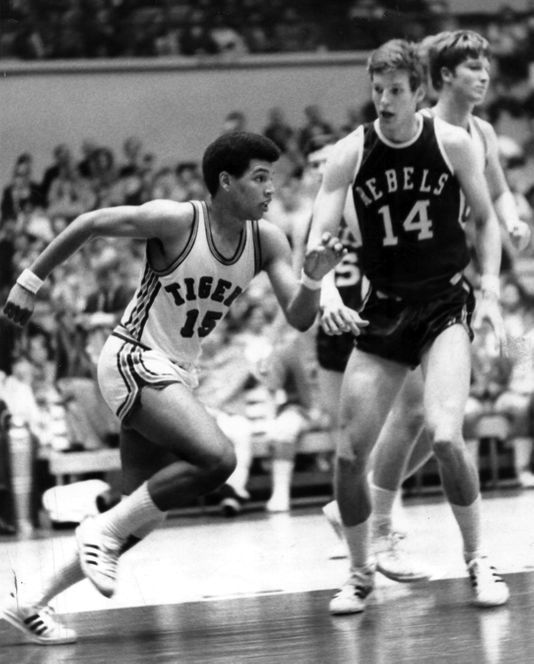

Memphis Tigers Basketball Coach Larry Finch
By Drew Hill
Commercial Appeal
One of the city's most iconic sports figures will soon be immortalized with a park and a statue on the University of Memphis campus.
University of Memphis President M. David Rudd announced Wednesday that the school has formed a committee to create Larry Finch Memorial Park," which will feature a statue of the former Tigers' basketball player and coach.
“The values Larry Finch lived were a model for us all, embracing the strength of diversity, the importance of unity in the face of adversity and the singular power of hope,” Rudd said in a statement on Thursday.
The location of the park on campus is still undetermined, although Rudd hinted it will likely be on the school's Park Avenue campus near the Laurie-Walton Family Basketball Center. He estimated the cost of the project would be between $250,000 and $500,000.
“Coach Finch was more than a coach,” Penny Hardaway said in a statement. “He was also a father figure. He helped me grow as a person and a basketball player.”
As a player, Finch led Memphis State to the 1973 Final Four and the Melrose High product later had his number retired by the university.
That team's success, and Finch's decision to stay home for college, is credited with helping to heal some of the city's racial wounds in the aftermath of Martin Luther King Jr.'s assassination in 1968.
Finch later became the head coach at Memphis and took the Tigers to six NCAA Tournament appearances, including a run to the Elite Eight in 1992 with Penny Hardaway. Finch remains the school's all-time winningest basketball coach.
Finch died in 2011 at age 60.